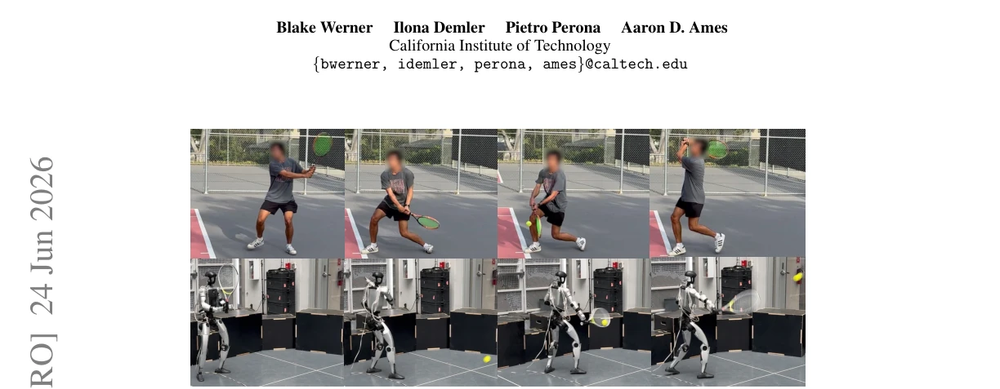
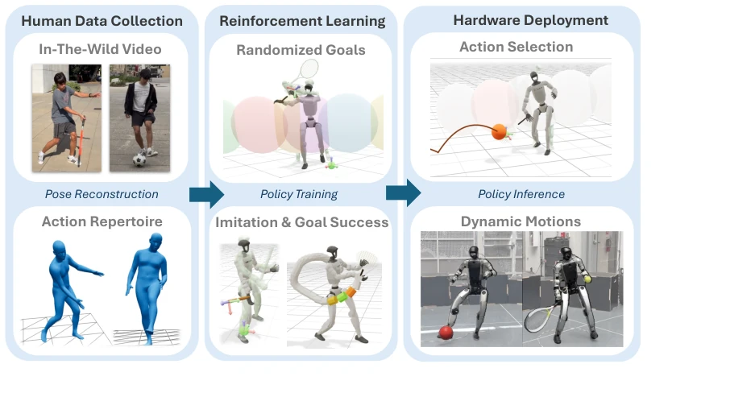
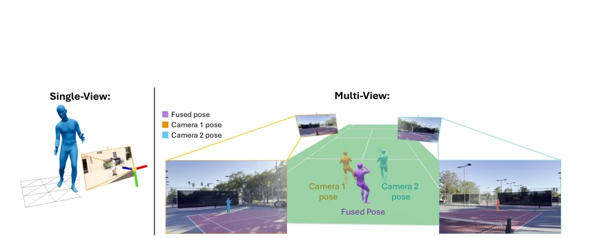
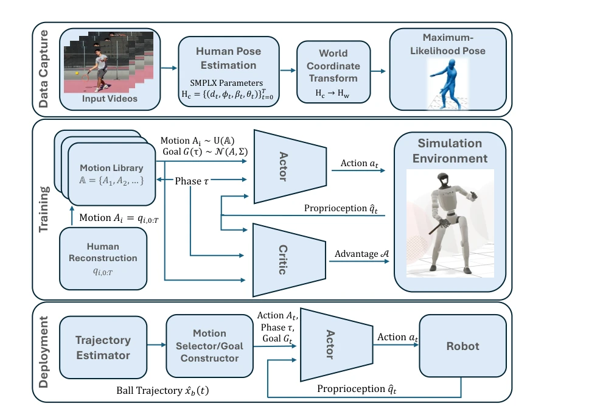
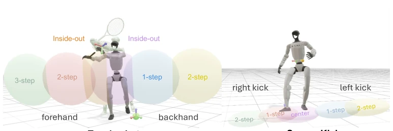
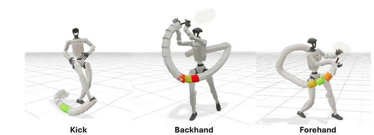
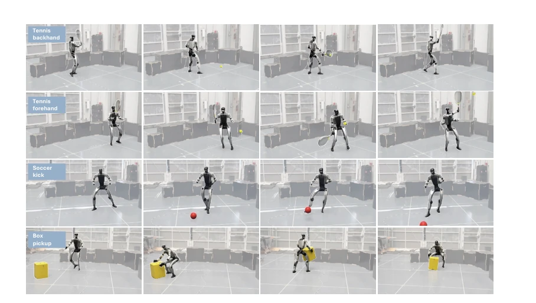
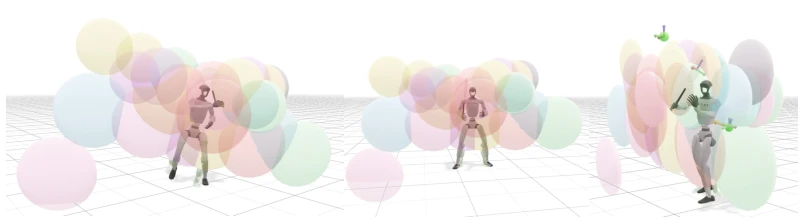
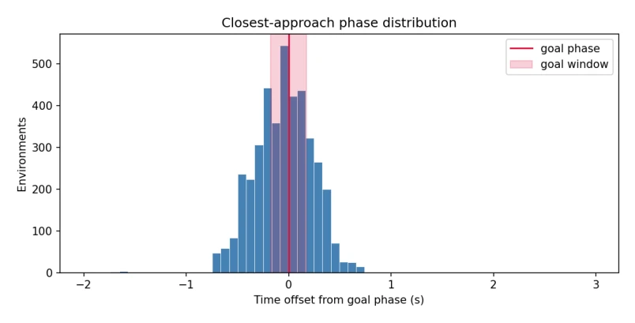

TaskNPoint claims to "teach humanoid robots to hit a backhand in one minute," and this efficiency is indeed more competitive than human coaches. It abstracts complex dynamic skills into "interaction windows," accomplishing them with single-frame video and reinforcement learning, saving tedious reward engineering. However, this "crash course" approach also comes with a cost: it relies extremely on perfect trajectory estimation; once the ball speed is too high or sensors introduce noise, the robot "fails" and loses stability. Compared to competitors requiring hours of training or massive datasets, it excels in data efficiency, but its robustness still needs verification against the "messy and unstructured" reality of the physical world. Overall, it is a clever shortcut, but do not expect it to directly win gold at the Olympics, after all, it has not yet learned how to perceive "force."
Humans learn tennis relying on coach demonstrations rather than watching thousands of hours of video, yet robots still rely on piling up massive data. Existing methods such as VideoMimic [2] and HumanX [7] can imitate, but require large amounts of data and face generalization difficulties. HITTER [6] is fast but task-specific. TaskNPoint identifies that the key to dynamic skills lies in "interaction windows" (such as the instant of ball impact), rather than the full trajectory. This addresses the issues of difficult reward design in traditional RL and poor generalization in imitation learning. Through human-robot division of labor, humans define skills and goals, while robots are responsible for physical implementation and generalization, aiming to achieve few-shot, fast-converging dynamic skill learning and avoid falling into the quagmire of endless hyperparameter tuning. Particularly regarding the simulation efficiency mentioned in [1], this method further compresses training time.

Figure 1: TaskNPoint is a training protocol that teaches humanoid robots dynamic skills from a single human video demonstration per motion. We have a human “coach” specify the discrete skills and critical interaction window, from which we generate goals G. Reinforcement learning in simulation with randomized targets lets a single demonstration generalize zero-shot to new target locations, trainable in under an hour on one GPU.
方法Method
整体流程分为数据获取、策略学习与运动规划。首先，从单目/多目视频用 SMPL-X 重建人体姿态，经最大似然估计融合多视角数据，再通过运动重定向映射到人形机器人形态。核心创新在于将任务抽象为时空目标 G=(p, v, n, t)，即交互点的位置、速度、朝向与时间。训练阶段，在仿真中用 PPO 强化学习，随机采样目标点以覆盖 3D 空间，策略网络同时优化轨迹跟踪与目标达成，奖励函数包含位置、速度及朝向匹配。部署阶段，高层规划器根据预测的物体轨迹选择最合适的动作库中的技能，并锁定目标。这种“目标导向”而非“轨迹导向”的抽象，使得单一样本能泛化到未见过的目标位置，实现了零样本迁移。
The overall process is divided into data acquisition, policy learning, and motion planning. First, human pose is reconstructed from monocular/multiview video using SMPL-X, multi-view data is fused via maximum likelihood estimation, and then mapped to humanoid robot morphology through motion retargeting. The core innovation lies in abstracting the task into a spatiotemporal goal G=(p, v, n, t), representing the position, velocity, orientation, and time of the interaction point. During the training phase, PPO reinforcement learning is employed in simulation, with random sampling of target points to cover 3D space; the policy network simultaneously optimizes trajectory tracking and goal achievement, with a reward function encompassing position, velocity, and orientation matching. During the deployment phase, a high-level planner selects the most suitable skill from the action library based on the predicted object trajectory and locks the target. This "goal-oriented" rather than "trajectory-oriented" abstraction enables a single demonstration to generalize to unseen target positions, achieving zero-shot transfer.

Figure 2: TaskNPoint Overview. From a small collection of videos of human demonstrations (one video per task), we provide a pipeline for learning a repertoire of goal-conditioned motions interacting with dynamic environments. We first reconstruct the human motions using SMPLX parameters (section 4), which we then kinematically retarget to the humanoid (section 4). A higher level planner conditions action selection on goal, then a policy trained to both imitate the action and accomplish the goal (section 5) performs the task conditioned on the simple abstraction, allowing for robust performance during deployment (section 7).

Figure 3: Video Demonstrations. We collect single-view (left) and multi-view (right) demonstra- tions and reconstruct human poses using state-of-the-art reconstruction methods (section 4). For the multi-view demonstrations, we fuse per-view estimates into a maximum-likelihood pose estimate.

Figure 4: Policy Architecture. (Top): We reconstruct reference single-view or multi-view human demonstrations via SMPL-X parameters (section 4). For multi-view video, we lift reconstructions into a shared coordinate space and calculate a maximum likelihood pose. (Middle): In training we use Asymmetric Actor Critic Policy Optimization [49] to optimize motions Ai from our motion library A, from which we sample randomized goals G (section 5). (Bottom): In deployment, policy observations are computed by a trajectory estimator and fed to the motion selection algorithm which takes care of selecting the action type, goal, and phase (section 6).

Figure 6: TaskNPoint Space Coverage. Our motion abstraction formulation allows us to cover a wide task space. Each colored sphere corresponds to a distinct reference human motion demonstra- tion, and is centered around the point of contact. During training (section 5) we randomly sample points around each point of contact to provide the learning algorithm with a diverse set of possible ball trajectories. The radius of each sphere represents the standard deviation of the sampling. Notice that the primary actions here are a Cartesian product of the type of shot (e.g. forehand and backhand) and the number of steps needed to reach the proper position to execute the shot.
Verified on the Unitree G1 robot, tasks cover tennis forehand/backhand, soccer kicking, and box grasping. In simulation, the tennis hit Generalized Success Rate (GSR) reached 93%, box grasping 98%, outperforming HDMI [3] and OmniRetarget [4]. Hardware testing showed 100% hit rate for slow balls, 40-70% for fast balls, and the ability to maintain standing upon failure. Ablation experiments indicated strong parameter robustness. However, limitations are obvious: it relies on OptiTrack ground truth estimation, and trajectory prediction error is the primary source of failure in real-world scenarios. Compared to HumanX [7]'s complex data generation, this method's training requires only 1 hour of GPU time, but sacrifices force feedback and adaptability to complex environments. Extended experiments show that increasing the number of demonstrations can cover more actions, proving the method possesses scalability.

Figure 5: Training Rewards. TaskNPoint learns a policy given a nominal target point and motion reference from a human demonstration (section 4). Motions and contact points are randomly sam- pled throughout training (section 5); position, velocity, and orientation rewards are assigned during the duration of contact. Segments in each motion tubule are color-coded by reward value.

Figure 7: Qualitative Results. We train TaskNPoint on a small set of reference demonstrations of tennis shots, soccer kicks, and box pick-and-place. By randomizing incoming target trajectories and positions, we are able to generalize to unseen target locations in deployment. We show successful execution of tennis shots (1st and 2nd row), soccer kicks (3rd row), and box pick-and-place (4th row). The columns show samples of the robot’s pose during task execution.

Figure 8: MLE poses. We test how well TaskNPoint scales with the number of demonstrations by training on MLE-estimated human poses from in-the-wild multi-view data of tennis practices and matches (section 4). Here we visualize the nominal point sampling volume during training. Each colored sphere is centered around the nominal point and corresponds to a distinct human demonstration, and the radius of each sphere corresponds to one standard deviation of the sampling area during training. We note that by increasing the number of demonstrations we are able to cover more shots, including volleys and overheads, and that many of the demonstration volumes overlap with each other, resulting in the ability to perform different actions on the same 3D point in space.

Figure 9: TaskNPoint Phase Histogram. We get density of target hit time even with very sparse rewards. We define the goal window as the phase range that we emperically determine is sufficient to get a solid hit.